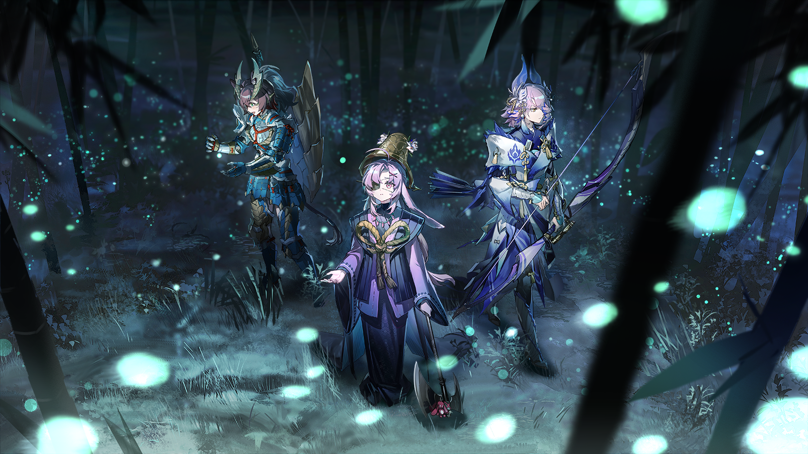
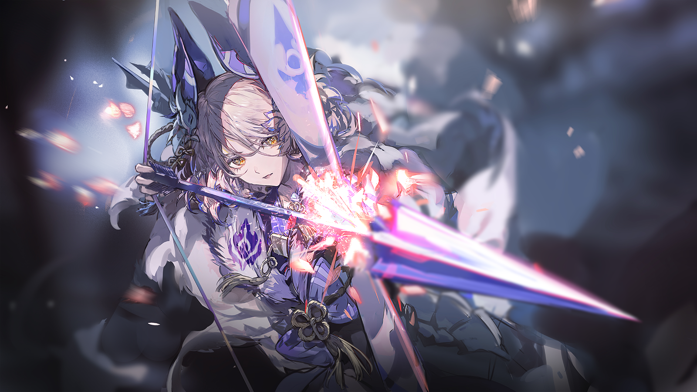

宝巫迦
此处再不可贸然前进。

宝巫迦
“雷之主”的踪迹在这里消失了，看来这里便是它的寄居之地。

梓兰
就在这片......竹林？不过为什么地下也有竹林？难道这片竹林和地上那片竹林是连在一起的？！
宝巫迦
不，这片竹林是“雷之主”的杰作。
宝巫迦
看到飘起的雾气了吗？那是“诅咒”的气息，虽然并非是“诅咒”本身。
宝巫迦
曾经也有人见证过它们出现在山峦之间，在里面迷失方向的人也不在少数。

宝巫迦
这证明吾等离它不远了。

空爆
我去看看。

梓兰
空爆！

空爆
咦？！

梓兰
你为什么会从我背后——
宝巫迦
切不可轻举妄动。
宝巫迦
是“雷之主”的栖息，让这里变成了这样。

政宗
看来比十年前更加茂密了喵......

义经
（略带迟疑的低吼）
政宗
雷狼龙是喜欢栖息在溪流地带的怪物，它凭借本能将这里变成了它的巢穴喵。
政宗
十年前，前代陛下曾无数次地在这片竹林中穿梭喵。

政宗
这片竹林太过诡异，以至于远征队的无数人迷失在其中再也没有回来喵。
空爆
......咦？
宝巫迦
怎么了，空爆小姐？
空爆
宝巫迦，你是不是在发光啊？

宝巫迦
欸？

政宗
确实，陛下的身体在发光喵！
宝巫迦
这是——
宝巫迦从怀中取出一个小瓶子。
瓶子中，一只飞虫正在撞击着瓶子，它的尾部微微发光。
梓兰
这是......
政宗
这是雷光虫喵！
梓兰
雷光虫？

政宗
雷光虫是一种和雷狼龙共生的虫子喵。
宝巫迦
这是母亲留给吾最后的东西。
宝巫迦
这些年来，吾一直将这只虫子带在身边，对吾来说，看到它，就像母亲还在吾的身边一样。

宝巫迦
但是，这些年来，它都很安静，而且几乎没有发光过，为什么——

空爆
它好像想出来的样子，要不然放出来看看？
宝巫迦点了点头，打开盖子，雷光虫悠然地从瓶中飞了出来，然后，它缓慢地向竹林深处飞去——

幽深的竹海仿佛被悄然唤醒，同样的光点陆续自地面、枝杈、残叶后浮现，星星点点，忽明忽灭，如同雨夜里被风拂动的灯笼。
竹林本来的暗影被这层微光洗淡。风吹时，竹叶摇曳投下的影子在地面轻轻浮动，仿佛青色涟漪中漂泊的剪纸。
宝巫迦停步，微微抬手。一只雷光虫掠过指尖，带着一簇更亮的电辉盘旋上升。
点点光华自上而下洒落，像是一阵由光组成的雨。
其他人站在她身侧，也不由自主屏住呼吸——仿佛只要有一丝声响便会惊散这场青光织成的静谧梦境。
在这片微光萦绕的竹海里，时间像被青竹握住了脉搏，只留下无声的跳动。
而雷光虫的舞蹈，则在跳动之上轻轻铺开一层柔软的、不可言说的安宁。
梓兰
好美。
空爆
哈，看我抓几只带回去！
宝巫迦
......
梓兰
怎么了，宝巫迦？
宝巫迦
如果它们和“雷之主”共生，它们应当也和“雷之主”一样来自远方异土......但是为什么，它们没有跟在“雷之主”身边呢？
宝巫迦
吾不知道......明明这一幕很美，但吾却感觉到很悲伤。

政宗
义经，你其实也感觉到了吧喵！

义经
（认可的低吼）
梓兰
怎么了？
空爆
梓兰姐，快看！
看似无序飞舞的雷光虫，不知何时汇聚在了一起，在竹林中形成了一条细长的光带，通往迷雾的深处。
宝巫迦
政宗大人，这是你说的那条路吗？
政宗
没错，没错喵！
义经
（兴奋的低吼）
政宗
原来那不是道路，而是这些雷光虫照亮的通道喵。
空爆
什么声音？！
梓兰
这声音......简直就像是竹林本身发出的......
宝巫迦
这是......母亲的声音？！
宝巫迦
母亲！你在这里吗！

宝巫迦
告诉吾，究竟发生了什么？！
宝巫迦
为什么你的力量会在“雷之主”身上，是它杀了你吗？
梓兰
宝巫迦，别冲动！

梓兰
宝巫迦！！！

空爆
梓兰姐，宝巫迦已经不见了！
梓兰
追！
梓兰
必须快点找到她！这些话......如果这是前代陛下以某种方式留下的遗言......那宝巫迦一定会控制不住自己的！
空爆
这里是——瀑布？
政宗
地上全是咒鬼的尸体喵！这些......全部都是陛下杀的喵！

义经
（激动的吼叫）
梓兰
她在那里！
咒鬼的尸体一路蔓延，而在这条尸体之路的尽头，宝巫迦站在瀑布的边缘，呆呆地看着瀑布的下方。
梓兰
这些话......
梓兰
啧，对现在的宝巫迦来说，这些话只会刺激她！
空爆
这些咒鬼，来得真是时候！
梓兰
宝巫迦，等等我们——！
宝巫迦
吾已经看见“雷之主”的所在了。
梓兰
等我们一起——
宝巫迦
等吾杀死“雷之主”后，会回来接你们的。

宝巫迦
到时候，你们就可以回家了。
空爆
她——她就这么跳下去了？！
空爆
梓兰姐，只能杀出去了！
梓兰
我知道！

梓兰
等等，这段话......
梓兰
难道说——
梓兰
可恶，难道说真相并不是我们想象的那样？
空爆
梓兰姐，你说什么？！
梓兰
我说，必须尽快赶到她的身边！否则，一切就晚了！
宝巫迦
终于......找到你了。
宝巫迦
“雷之主”......
雷光虫想要接近“雷之主”，然而，它们还没靠近“雷之主”，就被它体表冒出的黑气所掀飞。

“雷之主”
（痛苦的嘶吼）

宝巫迦
是吗......原来，是“诅咒”让这些雷光虫无法靠近你，难怪它们如此悲伤。
宝巫迦
“雷之主”，在这片不属于你的国度之中生活，对你而言，是不是也是一件十分痛苦的事？
宝巫迦
让吾终结这份痛苦吧。
空爆
总算杀出来了——
空爆
梓兰姐，看那边，遗迹的中央，那座祭坛上！宝巫迦正在和“雷之主”战斗！
宝巫迦
喝啊——！
宝巫迦
你果然很强大。
宝巫迦
既然如此——
巫女的力量在这一刻完全爆发，光芒在一瞬间将她包裹，并迅速蔓延，将“雷之主”也笼罩其中。
宝巫迦
咕——
宝巫迦
果然，没那么顺利......
宝巫迦
但是，吾早已做好心理准备。
宝巫迦
如果无法夺回你身上属于母亲的力量，那么，至少吾可以......
梓兰
她身上发出的光是怎么回事？！她在使用她的力量吸收“雷之主”身上的“诅咒”吗？
空爆
不......不对！吸收“诅咒”并不是这样！
政宗
这是......她正在用自身巫女的力量和雷狼龙身上属于前代陛下的巫女力量共鸣喵！
梓兰
共鸣......？难道说——
梓兰
她想要和“雷之主”同归于尽？！

义经
（焦急的吼叫）
政宗
不行喵！受到这股力量的牵引，那些从天坑陷落的咒鬼和被“诅咒”侵染的野兽都在往祭坛方向聚集喵！
政宗
再这样下去，陛下要被兽潮淹没了喵！
梓兰
必须想办法先阻止兽潮接近宝巫迦。

空爆
但是，怎么办？！这里离那座祭坛太远了！用翔虫也来不及啊！
梓兰
空爆，政宗，你们骑着义经去兽潮的必经之路，那座祭坛的正下方，帮我拖延一点时间！
政宗
喵？！但是——
梓兰
没空解释了，相信我！
空爆
我们走，义经，政宗！
梓兰
......

梓兰
唉......
梓兰
一个两个，都是不让人省心的家伙。

梓兰
这个位置......这个角度......应该还来得及。

在看到这个空间的瞬间，梓兰已经想到了解决方法。
她举起弓，对准远处的岩壁，那里有一大片尖锐的岩刺，恰好在那些咒鬼的必经之路上。
要击落这些岩刺当然不是一件简单的事，但她敏锐地察觉到了那片岩层的不稳定，只要以足够的力量和足够的精准度击中那里就好。
她能做到。
连她自己都有些讶异于这份自信，正如在她站出来斥责那些武士和宝巫迦之后，她也很诧异，自己居然会做出那种举动。
换作过去的自己，一定不会——吗？
她拉开弓，开始蓄力。
在这一刻，无数的念头涌上她的脑海，但这些纷乱的念头并没有让她混乱，相反，她感觉自己的精神没有一刻比现在更加集中。
梓兰
一开始，我以为泡影国的他们，是更好的他们。

梓兰
他们也有各自的问题，而且，本质上和我们认识的他们几乎如出一辙。
梓兰
如果泡普卡没有被凯尔希医生带入罗德岛，如果斑点和月见夜没有因为矿石病而加入罗德岛......
梓兰
如果他们没有加入A6小队......不，如果我们没有组成A6小队。
梓兰
或许他们的性格不会和这里的三个人一样，但他们都会依靠自己坚强地活下去。
梓兰
在他们面临困难的时刻，他们能想到的，也只有自己的力量。
梓兰
当一个人只有一个选择的时候，这就不是一个选择。
梓兰
但我总是告诉自己，你依然要尊重这样的他们。
梓兰
所以，我会劝告别人，却不会阻止别人，我只会在他们失败的时候，帮助他们。我把这当做一种尊重。
梓兰
但是——
梓兰
写给月见夜的那些话，其实也是写给我自己的。
我究竟能为那些我关心的人做些什么？
她松开弓弦。

政宗
梓兰怎么了？感觉从进入地下以来，梓兰就有些怪怪的喵！
空爆
梓兰姐......很纠结。
空爆
梓兰姐总是摆出一副事不关己，公事公办的样子，但她其实很关心身边的人。
空爆
她太关心了，以至于她不知道怎么去表达这种关心，到最后，她选择用那副样子来伪装自己。
空爆
久而久之，她连自己都骗过去了。
空爆
她当然很在意我们小队的情况，但是......
空爆
既然她会在那时站出来主持大局，她也一定会在此刻想到办法。

空爆
告诉你一个小秘密，政宗。
空爆
虽然我们从来不说，但在我们A6小队的成员遇到麻烦事的时候，我们心里总会浮现出一句话——

空爆
梓兰姐总会有办法的。
“咻”的一声，一支箭从兽潮头顶飞过，在昏暗的地下遗迹中，如同一道流星划过。
政宗
“龙之箭”喵？！
“流星”撞在岩壁上方，然后，一阵剧烈的震动传来。
政宗
要塌方了喵！

空爆
哈哈！不愧是梓兰姐！

空爆
兽潮被拦住了！梓兰姐在招呼我们去宝巫迦身边，走吧！